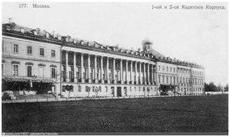
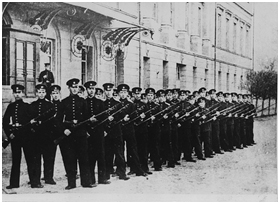
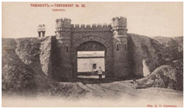
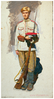
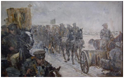
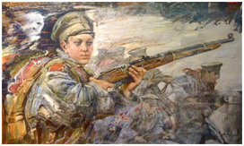
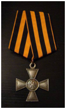
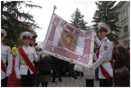
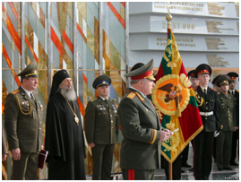
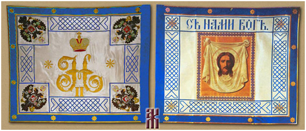

Февральские и октябрьские события 1917 г. основная масса кадет встретила весьма враждебно. Воспитанные на постулате «За Веру, Царя и Отечество» кадеты сначала с недоумением и горечью восприняли новость об отречении царя, а затем крайне отрицательно восприняли все касавшиеся их нововведения Временного правительства.
В конце марта 1917 г. всем начальникам военных училищ и директорам кадетских корпусов было предписано немедленно привести вверенные им учебные заведения к присяге «на верность службы Российскому государству и преданность Временному правительству». В августе 1917 г. кадетские корпуса были преобразованы в гимназии Военного ведомства, что также гордившимися своим званием кадетами было воспринято, мягко говоря, без энтузиазма. Но если до октября 1917 г. кадеты просто решительно отрицали происходившие перемены, не желая принимать присягу на верность Временному правительству или относясь к этомукак к некоему отбыванию номера, то события октября 1917 г. они восприняли в прямом смысле в штыки.
2. СИТУАЦИЯ В КАДЕТСКИХ КОРПУСАХ

Здание, в котором размещались 1-й и 2-й кадетские корпуса. Москва. Почтовая открытка.
Как результат резко негативной реакции на происходившие в стране события, в корпусах резко упал уровень дициплины. Несмотря на все старания директоров корпусов уберечь своих воспитанников от попадания в водоворот охвативших страну событий и сохранить нейтралитет, во 2-м Московком и многих других кадетских корпусах создаются тайные группы по борьбе с Временным правительством. Кадеты печатают на пишущей машинке прокламации и воззвания, а в отпускные дни расклеивают их по улицам.
Подобная ситуация, в перемешку с учением, сохранялась в кадетских корпусах до октября 1917 г. Октябрьские события были восприняты кадетами с нескрываемой враждебностью. Особого масла в огонь подлил приказ об упразднении чинов и отмене наружных знаков отличия (погон, нашивок, орденов, медалей и крестов). Кадеты категорически отказывались выполнять этот приказ и продолжали носить погоны, продев под них белый платок, что должно было означать верность монархии. Как писал в своем дневнике директор 1-го Сибирского Императора Александра I кадетского корпуса А.К. Зиневич, в ответ на продолжавшиеся настойчивые требования снять погоны кадеты «устроили потихоньку похороны погон, что, очевидно, стало известно большевикам, которые, явившись в корпус, потребовали, чтобы погоны им были выданы, и когда ящик с ними был откопан, тут же все было облито керосином и сожжено к вящей потехе служителей и неудовольствию кадет, довольно сумрачно смотрящих на всю эту процедуру сожжения дорогих для них отличий, как память о невозвратно минувшем прошлом».
3. ВООРУЖЕННОЕ СОПРОТИВЛЕНИЕ КАДЕТ НОВОЙ ВЛАСТИ

Кадеты на занятиях по военной подготовке. Фотография. 1900-е гг.
Кадеты, особенно старших классов, всячески игнорировали приказание директоров корпусов оставаться нейтральными. Практически во всех корпусах кадеты, разобрав винтовки, вышли на помощь выступившим против большевиков юнкерам. Многие кадеты более младших классов, мальчишки 14-15 лет, просто бежали из корпусов, чтобы соединиться со своими старшими товарищами. В Москве, которая сопротивлялась большевикам дольше чем Петроград, бои с переменным успехом продолжались больше недели. Наряду с оказывавшими яростное сопротивление большевикам юнкерами Алексеевского и Александровского училищ самое активное участие в вооруженных столкновениях принимали кадеты. Так было не только в Московских корпусах, подобное происходило во всех корпусах России: и в Одессе, и в Киеве, и в Симбирске, и в Омске и в других.
В 1917 г., когда появилась угроза, что Псков может быть занят немцами. Псковский кадетский корпус был эвакуирован в Казань. Во время октябрьского выступления местных большевиков, псковичи, как и московские кадеты, присоединились к казанским юнкерам и вместе с ними сражались против красных. В Омске кадеты старшего класса 1-го Сибирского корпуса установили контакты с нелегальной военной организацией и приняли участие в антисоветских выступлениях.В ноябре 1917 г. атаман Оренбургского Казачьего войска, А. И. Дутов, сформировав отряд своих казаков, взял в руки власть в Оренбурге. Строевая рота Оренбургского Неплюевского кадетского корпуса полностью, во главе со своим вице-фельдфебелем Юзбашевым, присоединилась к этому отряду, в его рядах принимала участие во многих боях, несла большие потери и показала исключительную стойкость.

Ташкентская крепость. Почтовая открытка. 1990-е гг.
Особенно кровавыми октябрьские дни были в Ташкенте. Там, как и повсюду, строевая рота кадет Ташкентцев присоединилась к юнкерам и вместе с ними обороняла Ташкентскую крепость от большевиков.
И это – лишь несколько примеров. Выступления кадет против новой власти носили практически повсеместный характер. При этом, если после октябрьский событий многие офицеры еще занимали выжидательную позицию, то юнкера и кадеты с самого начала не приняли новую власть и вступили с ней в бескомпромиссную и непримиримую борьбу. Воспитанные в преданности царю и отечеству, подталкиваемые юношеским максимализмом, кадеты шли в бой в первых рядах.
Дальнейшие действия советской власти еще больше восстановили кадет против нее. 24 января 1918 г. в военно-учебные заведения был направлен приказ, предписывавший воспитанникам гимназий не только снять погоны, но и срезать петлицы, заменить кокарды на две металлические или трафаретные буквы, обозначавшие название учебного заведения, заменить пуговицы с гербом на костяные или обшитые материей. 1 марта 1918 г. Главный комиссариат всех военно-учебных заведений Российской республики издал приказ за № 22 о прекращении преподавания в военно-учебных заведениях религиозных вероучений, а в конце 1918 г. все контролируемые советским правительством гимназии были переформированы в трудовые школы. Однако к этому времени большинство воспитанников кадетских корпусов уже покинули корпуса, а воспитанники старших классов примкнули к белому движению. Наступила пора активного выступления кадет против большевиков.
4. УЧАСТИЕ КАДЕТ В БОЕВЫХ ДЕЙСТВИЯХ НА СТОРОНЕ БЕЛОЙ АРМИИ
Сразу после того как стало известно , что на окраинах начинается борьба с большевиками, а в Новочеркасск к А.М. Каледину прибыл генерал М.В. Алексеев и приступил к формированию Добровольческой армии, кадеты одни из первых откликнулись на его призыв. Первой частью, сформированной Алексеевым, был Юнкерский батальон, состоявший из двух рот: первой — юнкерской и второй — кадетской, под командой штабс-капитана Мизерницкого. Этот батальон принял участие в бою за Ростов, потеряв почти полностью взвод капитана Донского, который состоял из кадет Орловского и Одесского корпусов.

Художник Д.Шмарин, "Дроздовец на молитве", 2000 г.
Генерал-майор А.В. Туркул, воевавший в частях М.Г. Дроздовского, в своих воспоминаниях пишет:» Кадеты пробирались к нам со всей России... Мальчуганы умудрялись протискиваться через все фронты. Они добирались до Кубанских степей из Москвы, Петербурга, Киева, Иркутска, Варшавы… Они ходили за мной по пятам, упрашивали, все божились, что умеют стрелять и наступать... Три взвода в моей роте были офицерские, а четвертый мальчишеский. Все воины четвертого взвода были, собственно говоря, подростками-мальчуганами».
Кадеты в составе партизанских отрядов В.М. Чернецова и Э.Ф. Семилетова защищали подступы к Новочеркасску и несли при этом тяжелые потери. Как пишет в своей книге “Кадеты и юнкера” участник тех событий А.Л. Марков, “каждый день в Новочеркасске раздавался траурный похоронный звон. Это хоронили русских юношей. За гробами обыкновенно шли или генерал Алексеев или атаман Каледин».
В феврале 1918 г. Добровольческая армия выступила в свой 1-ый Кубанский поход («Ледяной поход»). В станице Ольгинской генерал Корнилов сделал смотр юнкерскому батальону и произвел всех юнкеров в прапорщики, а кадетам старших классов дал звание «походных юнкеров». В ходе тяжелого боя у станицы части понесли тяжелые потери. Генерал А.П. Богаевский, позднее Донской атаман потом в своих воспоминаниях писал: «Особенно жалко мне было нескольких мальчиков — кадет Донского корпуса, погибших в этом бою... Какими молодцами шли они в бой!.. И не было сил остановить их в тылу, в обозе. Они все равно убегали оттуда в строй и бестрепетно шли в бой.»

Художник А. Ромасюков. «Ледяной поход». 2008 г.
В январе 1918 г. в Екатеринодаре был сформирован отряд под командой полковника Н.П. Лесевицкого, получивший название «Отряд Спасения Кубани.» Пятый взвод этого отряда назывался «кадетским». Он состоял из кадет Владикавказского, Воронежского, Московского корпуса и других корпусов. По началу этот отряд защищал Екатеринодар, затем влился в Добровольческую армию и в ходе ожесточенных боев понес тяжелые потери. Среди погибших было немало кадет.
Многие старшие кадеты эвакуированного в Казань Псковского корпуса сражались в войсках под командованием генерала В.О. Каппеля и в других частях Сибирской Белой армии. Одному кадету Псковичу удалось даже создать свой партизанский отряд, который с успехом действовал в тылу у красных.
Когда Казань оставлялась белыми, все остававшиеся кадеты-псковичи, всех возрастов, выступили походным порядком на Иркутск.
После оставления казаками Оренбурга, кадеты, соединившись с юнкерами Оренбургского училища, пошли через степи на Юг и, пробившись к Волге, вышли на соединение с Добровольческой армией. Там кадеты-оренбуржцы впоследствии составили почти целиком команду бронепоезда «Витязь». Бронепоезда в период Гражданской войны играли очень важную роль, поэтому их команды составлялись из особенно верных и стойких людей. Наиболее прославившимися бронепоездами Добровольческой армии были «Слава Офицера» и «Россия», команды которых главным образом состояли из кадет.

Художник А. Ромасюков «Бой под Канделем»
В январе 1920 г. отряд под командованием полковника А.А. Стесселя, вместе с которым шли около 400 кадет Одесского и Киевского корпусов, прикрывал эвакуацию из Одессы тех, кто не попал на корабли и вынужден был в пешем порядке двигаться к румынской границе. Среди кадет многие были младших классов, в возрасте от 12 до 14 лет.Возле селений Кандель и Зельц, со стороны которого наступала бригада Г.И. Котовского, отряд А.А.Стесселя, непревышавший 600 человек, ради спасения беженцев, женщин в вынужден был принять бой. Бой продолжался с небольшими перерывами от 9 часов утра до 6 часов вечера. Все попытки большевиков поколебать кадетские ряды остались безрезультатны.
В своем приказе от апреля 1920 г. Военный представитель Юга России в Румынии, генерал Геруа, касаясь этого боя, писал:
«Мужество и доблесть кадет, понесших в этих боях огромные потери, ставит их в ряды опытных воинов. От имени Главнокомандующего Вооруженными Силами Юга России благодарю доблестных героев-кадет за полное самоотверженности и мужества участие в боях под Канделем и Зельцем... Верю, что, проявив столько мужества в юношеском возрасте за дело страдающей Родины, кадеты впишут свои имена золотыми буквами в историю возрождения России.»Подлинно подписал генерал-лейтенант Геруа».
В борьбе против новой власти участвовали кадеты всех кадетских корпуса, оказавшиеся в сфере Гражданской войны. Все они участвовали в Белом движении. На востоке кадеты Сибирского, Иркутского и Хабаровского корпусов продолжали бороться до последнего дня своего существования. Многие из нихпогибли еще больше были ранены и эвакуированы вместе с корпусами.
“Мы видим кадет и на Дону, и с Корниловым в Кубанском походе, и под Орлом, и на Волге у Каппеля, и в Сибири у Колчака, и на подступах к Петрограду у Юденича, и на Перекопе у Врангеля. Они шли в первых рядах и о всех них осталась добрая слава. Их безымянные могилы разбросаны повсюду, где велась борьба с большевиками.
Их не нужно было призывать и мобилизовать — они сами шли,“ – пишет в своей книге Кадеты и юнкера” участник событий тех событий А.Л. Марков.

Георгиевский крест.
В составе образованного в 1920 г. генералом П.Н. Врангелем Крымского кадетского корпуса было уже 46 георгиевских кавалеров, один из которых имел три степени Георгиевского креста, а трое были удостоены двух степеней этой почетной награды.
Кадеты императорской России не посрамили своих предков, завещавших им жить по завету: «Жизни не щадя своей, отдать все за ВЕРУ, ЦАРЯ и ОТЕЧЕСТВО».
5. СУДЬБА ЗНАМЕН ИМПЕРАТОРСКИХ КАДЕТСКИХ КОРПУСОВ
Знамя Сумского кадетского корпуса
Знамена жаловались кадетским корпусам российскими императорами, и относились к ним кадеты, как к святыне. Знамена, как правило, хранились в корпусных храмах и выносились на парады, в дни корпусных и государственных или “царских” праздников.
После того как императорские кадетские корпуса прекратили свое существование судьба их знамен сложилась по-разному. В 1918 г. Советское правительство распорядилось сдать все старые императорские знамена. Это распоряжение касалось не только регулярных частей, но и кадетских корпусов. Это распоряжение вызвало резкое неприятие со стороны кадет. Кадеты каждого корпуса стремились спасти и сохранить свое знамя. Те из них, чьи корпуса оказались на территории, занятой белыми, сумели взять свои знамена с собой. Судьба же знамен тех кадетских корпусов, которые оказались на советской территории, складывалась, порой весьма непросто.
Как детектив выглядит история спасения знамени Сумского кадетского корпуса, врученного ему в 1906 г. великим князем Константином Константиновичем.
Когда в 1919 г. Сумской корпус был расформирован, знамя было вынесено из корпуса и спрятано в доме полковника Пожидаева под паркетом. Оставшиеся в Сумах офицеры корпуса поручили кадету Дмитрию Потемкину вывести знамя из города и хранить у себя пока не появится возможность переместить его в безопасное место. По дороге во Владикавказ Потемкин заболел тифом, однако перед тем как попасть в госпиталь успел передать знамя отцу. Вылечившись, Потемкин вместе со знаменем через Грузию пробрался в Крым и оттуда в составе Крымского корпуса эвакуировался в Королевство Сербов, Хорватов и Словенцев. По настоянию директора Крымского корпуса генерала В.В. Римского-Корсакова знамя было сдано ему, и его стали выносить перед Крымским корпусом. Знаменщиками всегда были кадеты Сумского корпуса. После образования в Югославии Русского Великого Князя Константина Константиновича кадетского корпуса сумское знамя находилось в нем до закрытия корпуса в 1944 г. После исхода корпуса из Югославии знамя спрятали за алтарем в храме корпуса в г. Белая Церковь. Об этом знали кадеты корпуса и священник храма. В 1952 г. выпускник корпуса Борис Скибицкий попросил своего дядю, командированного в Югославию сотрудника ООН, вывести знамя. 30 июня 1953 г. знамя было доставлено в Нью-Йорк, где и хранится до сих пор, являясь символом всех кадет, проживающих за пределами России. В 2000-х гг. в ответ на многочисленные просьбы руководства возрожденного в Сумах кадетского корпуса была изготовлена точная копия исторического боевого кадетского знамени с образом Спаса Нерукотворного и после освящения 9 октября 2012 г., в день празднования 110-летия со дня основания Сумского кадетского корпуса, торжественно вручено корпусу.

Церемония вручения копии знамени Сумскому кадетскому корпусу. Октябрь 2012 г.
Не менее полна приключений история спасения знамен Полоцкого и Симбирского кадетских корпусов. В 1915 г., когда возникла опасность оккупации Полоцка немецкими войсками, знамя Полоцкого кадетского корпуса было перезено в Симбирск и помещено в корпусную церковь Симбиркого кадетского корпуса. Когда в 1918 г. вышло распоряжение об обязательной сдаче старых императорских знамен, кадеты корпуса решили спасти свое знамя. Для этого они седлали слепок с ключа от корпусной церкви, где хранилось знамя, и, усыпив бдительность охранявших ее часовых, сумели незаметно проникнуть в церковь, срезать полотнища знамен и вынести их. Проявив находчивость, кадеты спрятали их в кадушки пальм в ротном зале так, что во время обыска они не были обнаружены.
Вскоре знамена вынули из кадушек, и кадеты, обернув их вокруг себя, большой группой выбежали из корпуса. Караул у входа в корпус настолько растерялся, что не задержал кадет. Местом хранения знамен была выбрана квартира сестры милосердия Евгении Викторовны Оврахт, жены подполковника Овтраха. Знамена, зашитые в подушку, не были обнаружены и в ходе последовавшего повального обыска. Позже она как сестра милосердия, пряча знамена, сумела добраться до Царицына и передала их в руки барона П.Н. Врангеля, который за совершенный подвиг наградил ее Георгиевской медалью 4-й степени.
Позже знамена были вывезены в Югославию и переданы в Русский кадетский корпус в Белой Церкви. В 1944 г. приэвакуации из Югославии было взято только знамя Полоцкого кадетского корпуса, а Симбирские знамена были оставлены.
В январе 1955 г. знамя, спасенное Е.В. Овтрах, ставшей игуменьей Эмилией, прибыло в США и ныне находится в митрополичьем храме Синода зарубежной церкви
После возрождения в 2010 г. Полоцкого корпуса (Полоцкое кадетское училище) и продолжительных переговоров с руководством Объединения российских кадет за рубежом было принято совместное решение изготовить новое знамя, которое станет преемником исторического, прикрепить к его полотнищу фрагмент старого знамени, освятить его на оригинале и передать возрожденному корпусу.

Церемония возвращения возрожденного знамени Полоцкого кадетского корпуса. Октябрь 2014 г.
Процесс изготовления знамени занял около полугода, и13 октября 2014 г. состоялась торжественная церемония передачи возрожденного знамени Полоцкого кадетского корпуса современному Полоцкому кадетскому училищу.

Знамя Симбирского кадетского корпуса
Знамя Симбирского кадетского корпуса сейчас находится в Кафедральном соборе Пресвятой Богородицы «Всех скорбящих Радости» в г. Сан-Франциско (США).
Знамя Псковского кадетского корпуса, переведенного в 1917 г. из Пскова в Казань, спас корпусной священник настоятель отец Василий.
Под знаменем 2-го Московского кадетского корпуса кадеты строевой роты выступили на улицы Москвы для борьбы с красными. После победы большевиков и ликвидации кадетских корпусов кадеты 2-го Московского корпуса торжественно простились со своим знаменем. После прощания участвовавшие в церемонии кадеты (около 30 человек) разделили знамя на кусочки, и каждый из кадет взял частицу знамени с собой.
Таким же образом поступили кадеты и преподаватели 1-го Московского кадетского корпуса.
В итоге за рубежом оказались знамена Полоцкого, Симбирского, Сумского кадетских корпусов и фрагменты знамен Киевского, 1-го Московского, Нижегородского, Полтавского и Воронежского кадетских корпусов, которые по-прежнему хранятся как величайшие святыни.